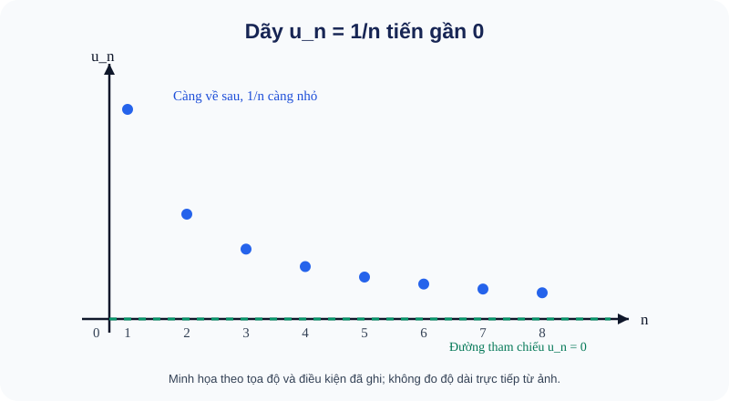
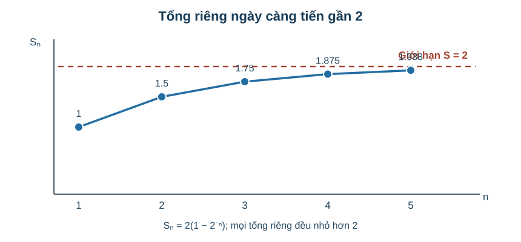

Bài 15. Giới hạn của dãy số
TOÁN 11 · CHƯƠNG V · SGK KẾT NỐI TRI THỨC
Hiểu vì sao số hạng tiến gần một giá trị, cách tính giới hạn, tổng vô hạn có thể hữu hạn và giới hạn vô cực. Kiểm điều kiện trước mọi phép biến đổi.
1. Khám phá kiến thức
Mỗi lần Achilles chạy hết khoảng cách đến vị trí cũ của con rùa, rùa lại nhích lên một đoạn. Nếu cứ chia quãng đường như vậy, ta có vô số đoạn; nhưng điều ấy có đồng nghĩa thời gian đuổi kịp là vô hạn? Câu hỏi này dẫn đến hai điều khác nhau: giới hạn các số hạng và giới hạn của tổng các số hạng. Trước khi dùng công thức, em cần hình dung thế nào là “đủ gần”, “tổng riêng” và “vượt mọi mốc”.
1.1. Giới hạn hữu hạn của dãy số
Xét dãy \(u_n=\frac1n\) với \(n=1,2,\ldots\). Các giá trị đầu là \(1;\frac12;\frac13;\frac14;\ldots\). Không có số hạng cuối cùng và không số hạng nào bằng 0. Nhưng các số hạng càng về sau càng gần 0. Nếu yêu cầu khoảng cách tới 0 nhỏ hơn \(0{,}01\), chỉ cần \(n>100\); từ đó về sau mọi số hạng đều đáp ứng. Yêu cầu khoảng cách nhỏ hơn \(0{,}0001\) thì lại chọn mốc lớn hơn. Mốc chỉ số cần chọn phụ thuộc vào mức sai số mong muốn: sai số càng nhỏ, có thể phải đi càng xa trong dãy.

Ta nói \(u_n\to0\) khi các giá trị tuyệt đối \(|u_n|\) nhỏ hơn mức sai số dương tùy ý được chọn, kể từ một chỉ số \(N\), tất cả số hạng đều thỏa điều kiện; không phải chỉ vài số hạng tình cờ gần 0. Khi muốn dãy tiến đến \(a\), ta xét khoảng cách \(|u_n-a|\). Nói \(u_n\to a\) tương đương \(u_n-a\to0\). Chẳng hạn \(3+\frac2n\to3\) vì khoảng cách đến 3 là \(2/n\to0\).
Kết quả cơ bản: \(\frac1{n^k}\to0\) với số nguyên dương \(k\); \(q^n\to0\) khi \(|q|<1\). Vì thế \(0{,}8^n\to0\), và \((-\frac12)^n\to0\) dù đổi dấu. Nếu \(|u_n|\le v_n\) với \(v_n\ge0\) và \(v_n\to0\), thì \(u_n\to0\): một khoảng cách nhỏ hơn khoảng cách khác đang tiến về 0 cũng phải tiến về 0.
Không phải mọi dãy đều có giới hạn hữu hạn. Dãy \((-1)^n\) lần lượt nhận \( -1,1,-1,1,\ldots\); dù bị chặn trong khoảng \([-1,1]\), nó không tiến gần một số thực duy nhất. Nhưng \(\frac{(-1)^n}{n}\to0\) vì giá trị tuyệt đối bằng \(1/n\to0\). Điều quan trọng là khoảng cách tới giới hạn, không chỉ có hay không có dấu âm.
Vận dụng. Hai dãy \(a_n=4+\frac{3}{n}\) và \(b_n=\frac{(-1)^n}{n}\) có giới hạn hữu hạn nào? Giải thích bằng khoảng cách chứ không chỉ thay số lớn.
Đối chiếu
Lời giải: \(|a_n-4|=3/n\to0\) nên \(a_n\to4\). Với \(b_n\), \(|b_n|=1/n\to0\), nên \(b_n\to0\). Dãy \(b_n\) đổi dấu nhưng vẫn có giới hạn 0 vì độ lớn ngày càng nhỏ.
Kiểm lỗi
Đừng nói “dãy không có giới hạn vì có số hạng âm”. Hãy kiểm \(|u_n-a|\) có tiến về 0 không; và nhớ \(n\to+\infty\) không có nghĩa thay \(n\) bằng một số mang tên “vô cực”.
1.2. Định lí về giới hạn hữu hạn của dãy số
Khi đã biết hai dãy \(u_n\to a\), \(v_n\to b\) với \(a,b\) là số thực, ta có thể cộng, trừ, nhân và — với điều kiện — chia các giới hạn. Tại sao? Nếu từ một mốc đủ lớn, \(u_n\) gần \(a\) và \(v_n\) gần \(b\), thì tổng và tích của chúng gần \(a+b\), \(ab\). Nhưng với phép chia, nếu mẫu tiến về 0, giá trị thương có thể biến động mạnh; không thể lấy \(a/b\) khi \(b=0\).
Lấy dãy \(w_n=\frac{5n^2-3}{2n^2+n}\). Ta không “thay \(n=\infty\)”; thay vào đó chia cả tử và mẫu cho cùng \(n^2\):
Đây là chọn phương pháp có lí do: tử và mẫu đều bậc hai, sau khi chia cho \(n^2\), mỗi phần còn lại có giới hạn hữu hạn, và mẫu tiến đến 2 khác 0. Nếu mẫu sau khi chuẩn hóa tiến đến 0, ta không được áp dụng ngay định lí phép chia.
Nếu \(u_n\ge0\) và \(u_n\to a\ge0\), thì \(\sqrt{u_n}\to\sqrt a\). Chẳng hạn \(\sqrt{\frac{n+1}{4n+5}}\to\sqrt{\frac14}=\frac12\), vì biểu thức trong căn không âm và mẫu giới hạn sau chia cho \(n\) bằng 4. Không thể tự lấy căn nếu biểu thức bên trong âm hoặc ngoài miền xác định.
Vận dụng. Tính \(\lim\limits_{n\to+\infty}\frac{2n+3}{n-1}\) (dãy xác định từ \(n\ge2\)), và nêu vì sao phép chia giới hạn hợp lệ.
Đối chiếu
Lời giải: Chia tử, mẫu cho \(n\): \(\frac{2+3/n}{1-1/n}\to\frac{2+0}{1-0}=2\). Mẫu của biểu thức đã chuẩn hóa tiến về 1 khác 0 (và \(n-1\ne0\) với \(n\ge2\)), nên định lí phép chia áp dụng được.
Kiểm lỗi
Sai phổ biến là viết \(\frac{0}{0}\) rồi tùy tiện “rút gọn” vì nhìn thấy \(n\to\infty\), hoặc quên kiểm mẫu. Trước khi chia giới hạn, hãy chỉ ra giới hạn của mẫu khác 0.
1.3. Tổng của cấp số nhân lùi vô hạn
Khi biết \(\frac1n\to0\), em có thể nghĩ: “Số hạng ngày càng nhỏ thì tổng vô số số hạng có thể vẫn rất lớn không?” Câu trả lời tùy dãy. Với cấp số nhân \(1,\frac12,\frac14,\frac18,\ldots\), tổng riêng \(S_n\) sau \(n\) số hạng không ngừng tăng, nhưng luôn nhỏ hơn 2; phần thiếu so với 2 giảm dần. Đây là ví dụ tổng của vô hạn số hạng nhưng hữu hạn.

Với cấp số nhân có số hạng đầu \(u_1\), công bội \(q\), tổng \(n\) số hạng đầu (khi \(q\ne1\)) là \(S_n=u_1\frac{1-q^n}{1-q}\). Nếu \(|q|<1\), \(q^n\to0\), nên \(S_n\to\frac{u_1}{1-q}\). Tổng của cấp số nhân lùi vô hạn là giới hạn đó. Điều kiện \(|q|<1\) bảo đảm phần còn lại \(u_1q^n/(1-q)\to0\); không phải “vô hạn số hạng nào cũng cộng được”.
Thử dãy \(6,-3,\frac32,-\frac34,\ldots\) có \(q=-\frac12\). Công bội âm không cản trở hội tụ, vì \(|q|=\frac12<1\); tổng vô hạn bằng \(6/(1+\frac12)=4\). Các tổng riêng của ví dụ luân phiên trên và dưới 4, khác với tổng riêng tăng dần khi \(u_1>0\) và \(0<q<1\). Nếu \(q=1\), tổng \(2+2+2+\cdots\) tăng không bị chặn; không áp dụng công thức tổng vô hạn.
Trở lại câu chuyện Achilles: nếu thời gian ở chặng đầu là 1 giây và mỗi chặng sau mất một nửa thời gian chặng trước, tổng thời gian của vô số chặng là \(1/(1-1/2)=2\) giây. Việc chia quá trình thành vô số chặng không làm thời gian đuổi kịp trở thành vô hạn.
Đổi số thập phân tuần hoàn thành phân số: \(0{,}(27)=0{,}27+0{,}0027+0{,}000027+\cdots\). Đây là cấp số nhân với \(u_1=27/100,\ q=1/100\), nên tổng bằng \(\frac{27/100}{1-1/100}=\frac3{11}\).
Vận dụng. Một mô hình ghi nhận các khoản đóng góp \(8,4,2,1,\ldots\) (đơn vị). Tính tổng lý thuyết nếu mô hình kéo dài mãi. Vì sao tổng thực tế sau hữu hạn đợt nhỏ hơn tổng đó?
Đối chiếu
Lời giải: Đây là cấp số nhân lùi vô hạn với \(u_1=8\), \(q=\frac12\), \(|q|<1\). Tổng vô hạn bằng \(8/(1-\frac12)=16\) đơn vị. Sau \(n\) đợt, \(S_n=16(1-2^{-n})<16\) do \(2^{-n}>0\); khoảng thiếu tiến về 0 khi \(n\) tăng.
Kiểm lỗi
Đừng lấy \(S_n\) hữu hạn rồi gọi nó bằng tổng vô hạn; cũng đừng áp dụng \(u_1/(1-q)\) khi \(|q|\ge1\). Kiểm công bội trước, sau đó mới tính.
1.4. Giới hạn vô cực của dãy số
Từ ngữ “tiến tới vô cực” khác hẳn “tiến tới một số rất lớn cố định”. Dãy \(u_n=n^2\) có thể vượt mọi mốc dương \(M\) mà em chỉ định, và từ một chỉ số đủ lớn trở đi mọi số hạng đều vượt \(M\). Ta viết \(n^2\to+\infty\). Tương tự, \(-n^2\to-\infty\) vì cuối cùng mọi số hạng nhỏ hơn \(-M\).
Chẳng hạn nếu đặt \(M=10^6\), chỉ cần \(n>1000\) thì \(n^2>M\). Nếu đặt một mốc lớn hơn nữa, chọn \(n\) lớn hơn. Dấu \(+\infty\) không phải một số thực để thay vào phép tính. Với \(v_n=(-1)^n n\), độ lớn tăng mãi nhưng dấu thay đổi, nên dãy không tiến đến \(+\infty\) hay \(-\infty\); không thể chỉ nhìn \(|v_n|\).
Các ví dụ cơ bản: \(n^k\to+\infty\) với \(k\) nguyên dương; \(q^n\to+\infty\) khi \(q>1\). Với tổng có thành phần hữu hạn, nếu \(u_n\to+\infty\) và \(v_n\to b\) hữu hạn, thì \(u_n+v_n\to+\infty\). Với tích, nếu \(u_n\to+\infty\) và \(v_n\to b>0\) thì \(u_nv_n\to+\infty\); còn nếu \(b<0\) thì \(u_nv_n\to-\infty\). Nếu \(b=0\) thì không được suy ra giới hạn của tích từ các mệnh đề này.
Với thương, nếu tử tiến tới một số thực còn mẫu tiến tới \(+\infty\) hoặc \(-\infty\), thương tiến về 0: chẳng hạn \((2+1/n)/n\to0\). Nếu tử tiến tới \(a>0\) còn mẫu dương tiến về 0, thương tiến tới \(+\infty\), chẳng hạn \(2/(1/n)=2n\). Đổi dấu tử hoặc mẫu thì đổi dấu của giới hạn vô cực. Nếu cả hai dãy cùng tiến tới \(+\infty\), tích cũng tiến tới \(+\infty\).
Ví dụ \(\frac{n^2}{2n+1}=\frac n{2+1/n}\to+\infty\) vì mẫu đã chuẩn hóa tiến về 2 dương, cuối cùng nằm giữa hai số dương cố định (chẳng hạn \(2<2+1/n\le3\)), còn tử \(n\) tăng không bị chặn. Không viết \(\infty/\infty=1\) hoặc coi vô cực như số để rút gọn.
Vận dụng. Dãy \(a_n=\frac{n^2}{2n+1}\) và \(b_n=(-1)^n n\) có cùng giới hạn \(+\infty\) không? Chứng minh bằng một ước lượng hoặc xét dấu.
Đối chiếu
Lời giải: \(a_n=\frac n{2+1/n}\ge n/3\) với \(n\ge1\), nên \(a_n\to+\infty\). Dãy \(b_n\) có các số hạng chẵn dương và lẻ âm với độ lớn tăng, nên không có giới hạn \(+\infty\) cũng không có giới hạn \(-\infty\).
Kiểm lỗi
\(\lvert b_n\rvert\to+\infty\) không đủ kết luận \(b_n\to+\infty\). Với dãy dạng phân thức bậc khác nhau, chia cho lũy thừa thích hợp và kiểm dấu, không coi ký hiệu vô cực là số thực.
2. Kiến thức SGK
2.1. Giới hạn hữu hạn của dãy số
Dãy \((u_n)\) có giới hạn 0 khi \(n\to+\infty\) nếu \(|u_n|\) có thể nhỏ hơn một số dương bé tùy ý kể từ một số hạng nào đó trở đi. Viết \(\lim_{n\to+\infty}u_n=0\). Nói chính xác: với mỗi \(\varepsilon>0\), có \(N\) sao cho mọi \(n\ge N\) đều có \(|u_n|<\varepsilon\).
Với \(a\in\mathbb R\), dãy \((u_n)\) có giới hạn là \(a\) khi \(n\to+\infty\) nếu \(\lim_{n\to+\infty}(u_n-a)=0\). Kí hiệu \(\lim_{n\to+\infty}u_n=a\) hoặc \(u_n\to a\). Như vậy điều kiện chỉ yêu cầu từ một lúc đủ muộn các số hạng sát \(a\); không yêu cầu có số hạng bằng \(a\).
Những giới hạn cơ bản SGK: Với \(k\) nguyên dương, \(\lim 1/n^k=0\); với \(|q|<1\), \(\lim q^n=0\). Dãy hằng \(u_n=c\) có giới hạn \(c\). Nếu \(|u_n|\le v_n\) và \(v_n\to0\) với \(v_n\ge0\), thì \(u_n\to0\) (định lí kẹp trong dạng SGK dùng).
Phân biệt: Dãy \((-1)^n\) không có giới hạn hữu hạn vì luân phiên \(-1,1\). Dãy \(\frac{(-1)^n}{n}\to0\) nhờ \(\left|\frac{(-1)^n}{n}\right|=1/n\to0\).
2.2. Định lí về giới hạn hữu hạn của dãy số
Nếu \(u_n\to a\) và \(v_n\to b\) với \(a,b\in\mathbb R\), thì \(u_n\pm v_n\to a\pm b\); \(u_nv_n\to ab\); và \(u_n/v_n\to a/b\) khi \(b\ne0\) (khi ấy \(v_n\ne0\) từ một chỉ số đủ lớn). Nếu \(u_n\ge0\) và \(u_n\to a\ge0\), thì \(\sqrt{u_n}\to\sqrt a\).
Điều kiện/giới hạn: Các phép toán trên áp dụng cho hai giới hạn hữu hạn. Không dùng phép chia khi giới hạn mẫu là 0. Với căn bậc hai phải bảo đảm dãy dưới căn không âm; nếu các số hạng \(u_n\ge0\) và \(u_n\to a\), thì nhất thiết \(a\ge0\).
Phương pháp với phân thức theo \(n\): Chia cả tử và mẫu cho cùng lũy thừa \(n\) cao nhất thích hợp; sau khi chuẩn hóa, dùng định lí khi giới hạn mẫu khác 0. Ví dụ \(\lim\frac{5n^2-3}{2n^2+n}=\frac52\). Với biểu thức căn, chỉ lấy giới hạn căn khi dãy dưới căn xác định và không âm.
2.3. Tổng của cấp số nhân lùi vô hạn
Cấp số nhân vô hạn có số hạng đầu \(u_1\) và công bội \(q\) thỏa \(|q|<1\) được gọi là cấp số nhân lùi vô hạn. Tổng vô hạn của cấp số nhân ấy là giới hạn của dãy tổng riêng \(S_n=u_1+u_1q+\cdots+u_1q^{n-1}\), chứ không phải phép cộng đến một số hạng cuối cùng.
Với \(|q|<1\): \(\displaystyle S_n=\frac{u_1(1-q^n)}{1-q}\), và \(\displaystyle S=\lim_{n\to+\infty}S_n=\frac{u_1}{1-q}\).
Nếu \(|q|\ge1\), không dùng công thức tổng vô hạn này; giới hạn tổng riêng phải được xem xét riêng.
Ứng dụng: \(0{,}(27)=\sum_{j=1}^{\infty}\frac{27}{100^j}=\frac{27/100}{1-1/100}=\frac3{11}\); kí hiệu tổng vô hạn ở đây là giới hạn các tổng riêng.
Cách kiểm hợp lí: Với \(u_1>0\), \(0<q<1\), mọi tổng riêng dương tăng dần và nhỏ hơn \(S\). Nếu \(q<0\) nhưng \(|q|<1\), các tổng riêng có thể luân phiên quanh \(S\), dù vẫn hội tụ về \(S\).
2.4. Giới hạn vô cực của dãy số
Dãy \((u_n)\) có giới hạn \(+\infty\) khi từ một số hạng nào đó trở đi, \(u_n\) lớn hơn mọi mốc dương cho trước; kí hiệu \(u_n\to+\infty\). Dãy có giới hạn \(-\infty\) nếu từ một lúc đủ muộn \(u_n\) nhỏ hơn mọi mốc âm có độ lớn tùy ý, tức với mọi \(M>0\) có \(u_n<-M\) kể từ một chỉ số đủ lớn.
Giới hạn cơ bản SGK: \(n^k\to+\infty\) với số nguyên dương \(k\), \(q^n\to+\infty\) khi \(q>1\); \(-n^k\to-\infty\). Vô cực không phải một số thực.
Nếu \(u_n\to+\infty\), \(v_n\to b\in\mathbb R\) thì \(u_n+v_n\to+\infty\). Nếu thêm \(b>0\), \(u_nv_n\to+\infty\); nếu \(b<0\), \(u_nv_n\to-\infty\). Với \(b=0\), không thể suy ngay giới hạn tích chỉ từ hai giới hạn đó. Nếu \(u_n,v_n\to+\infty\) thì \(u_nv_n\to+\infty\). Nếu \(u_n\to a\in\mathbb R\) và \(v_n\to\pm\infty\) thì \(u_n/v_n\to0\). Nếu \(u_n\to a>0,\ v_n\to0\) và \(v_n>0\) kể từ một chỉ số đủ lớn thì \(u_n/v_n\to+\infty\); với mẫu âm hoặc tử có giới hạn âm khác 0, xét dấu tương ứng. Các trường hợp \(\infty-\infty\), \(0\cdot\infty\), \(\infty/\infty\) là dạng cần biến đổi hoặc xét riêng.
Lí do chọn phương pháp: Với \(u_n=\frac{n^2}{2n+1}=\frac n{2+1/n}\), mẫu chuẩn hóa dương và tiến về 2, nên \(u_n\to+\infty\). Cũng có thể kẹp: với \(n\ge1\), \(n/3\le u_n<n/2\). Việc thấy bậc tử lớn hơn bậc mẫu chỉ là dự đoán; cần kiểm cả dấu của mẫu.
Không nhầm: \((-1)^n n\) có độ lớn tăng vô hạn nhưng không có giới hạn \(+\infty\) hay \(-\infty\) vì dấu đổi qua lại. Không lấy \(\infty\) như số để thay vào biểu thức.
3. Ví dụ
3.1. Chứng minh giới hạn 0, rồi chuyển sang giới hạn hữu hạn
Đề bài. Xét \(u_n=1/n^2\) và \(v_n=5+2/n^2\) với \(n\ge1\). Hãy tìm giới hạn của hai dãy, giải thích vì sao dãy thứ hai có giới hạn 5.
Phân tích: Không cần tìm “số hạng cuối”. Với \(u_n\), khoảng cách đến 0 là \(1/n^2\). Với \(v_n\), xét hiệu \(v_n-5\) để dùng định nghĩa giới hạn hữu hạn.
Lời giải. Vì \(n^2\) tăng không bị chặn, \(1/n^2\to0\). Nếu cần độ chính xác \(\varepsilon>0\), chọn \(N>1/\sqrt\varepsilon\); khi \(n\ge N\), \(1/n^2<\varepsilon\). Mặt khác \(|v_n-5|=2/n^2\to0\), nên \(v_n\to5\).
Kiểm lại: \(u_n>0\) với mọi \(n\); \(v_n>5\) với mọi \(n\). Cả hai vẫn có giới hạn dù không hề bằng giá trị giới hạn ở một số hạng hữu hạn.
3.2. Đổi dấu nhưng vẫn có thể có giới hạn
Đề bài. So sánh hai dãy \(a_n=(-1)^n/n\) và \(b_n=(-1)^n\). Dãy nào có giới hạn hữu hạn?
Phân tích: Khi có dấu luân phiên, kiểm độ lớn. Đừng đồng nhất “thay đổi dấu” với “không có giới hạn”.
Lời giải. \(|a_n|=1/n\to0\), do đó \(a_n\to0\). Trong khi đó \(b_{2k}=1\), \(b_{2k+1}=-1\) với mọi \(k\) tự nhiên, nên hai nhóm số hạng chẵn và lẻ không tiến đến một giá trị chung; \(b_n\) không có giới hạn hữu hạn.
Kiểm lại: Mỗi dãy đều đổi dấu. Chỉ dãy \(a_n\) có độ lớn tiến về 0, bảo đảm mọi số hạng về sau nằm gần 0.
3.3. Chọn cùng bậc để chia phân thức
Đề bài. Tính \(\lim\limits_{n\to+\infty}\dfrac{5n^2+3n}{2n^2-1}\).
Phân tích: Tử và mẫu cùng bậc 2, nên chia cả hai cho \(n^2\). Phải kiểm giới hạn mẫu sau chia khác 0 rồi mới dùng định lí thương.
Lời giải. \(\dfrac{5n^2+3n}{2n^2-1}=\dfrac{5+3/n}{2-1/n^2}\). Khi \(n\to+\infty\), tử tiến đến 5, mẫu tiến đến 2 khác 0. Vậy giới hạn là \(5/2\).
Kiểm lại: Mẫu gốc \(2n^2-1>0\) khi \(n\ge1\), nên biểu thức xác định. Không thế \(n=\infty\) để nhận \(\infty/\infty\).
3.4. Giới hạn của căn bậc hai
Đề bài. Tính \(\lim\limits_{n\to+\infty}\sqrt{\dfrac{n+1}{4n+5}}\).
Phân tích: Trước khi lấy căn giới hạn, kiểm biểu thức dưới căn không âm. Chia cả tử/mẫu bên trong cho \(n\).
Lời giải. Với \(n\ge1\), \((n+1)/(4n+5)>0\). Ta có \(\dfrac{n+1}{4n+5}=\dfrac{1+1/n}{4+5/n}\to1/4\). Theo định lí giới hạn căn bậc hai của dãy không âm, \(\sqrt{\dfrac{n+1}{4n+5}}\to\sqrt{1/4}=1/2\).
Kiểm lại: Dãy dưới căn dương và giới hạn \(1/4\ge0\); căn kết quả là \(1/2>0\), không lấy giá trị âm.
3.5. Tổng cấp số nhân lùi vô hạn với công bội dương
Đề bài. Tính \(T=8+4+2+1+\cdots\); viết tổng \(n\) số hạng đầu và giải thích vì sao tổng vô hạn tồn tại.
Phân tích: Xác định \(u_1=8\), \(q=1/2\), kiểm \(|q|<1\), rồi lấy giới hạn dãy tổng riêng.
Lời giải. Đây là cấp số nhân lùi vô hạn vì \(|q|=1/2<1\). Tổng \(n\) số hạng đầu là \(S_n=8(1-(1/2)^n)/(1-1/2)=16(1-2^{-n})\). Do \(2^{-n}\to0\), nên \(T=\lim S_n=16\).
Kiểm lại: Với \(n=3\), tổng \(8+4+2=14\), khớp \(16(1-1/8)=14\). Tổng riêng luôn nhỏ hơn 16 và tiến dần đến 16.
3.6. Công bội âm vẫn có thể hội tụ
Đề bài. Tính \(T=6-3+\dfrac32-\dfrac34+\cdots\). Các tổng riêng có luôn tăng không?
Phân tích: Công bội \(q=-1/2\) có giá trị tuyệt đối nhỏ hơn 1, nên công thức tổng vô hạn vẫn dùng được, nhưng dấu các số hạng luân phiên làm tổng riêng không đơn điệu.
Lời giải. \(u_1=6\), \(q=-1/2\), \(|q|<1\), nên \(T=6/(1-(-1/2))=6/(3/2)=4\). Ba tổng riêng đầu là \(S_1=6\), \(S_2=3\), \(S_3=9/2=4{,}5\), lần lượt nằm trên, dưới, trên 4. Chúng không tăng đơn điệu nhưng tiến đến 4.
Kiểm lại: Không nhầm \(q=-1/2\) với \(q=+1/2\); nếu thay nhầm dấu sẽ ra 12 thay vì 4.
3.7. Chứng minh giới hạn dương vô cực bằng chặn dưới
Đề bài. Chứng minh \(\lim\limits_{n\to+\infty}\dfrac{n^2}{2n+1}=+\infty\).
Phân tích: Chia tử, mẫu cho \(n\) để thấy phần tăng theo \(n\); sau đó dùng một chặn dưới tăng không bị chặn nhằm giải thích đúng định nghĩa \(+\infty\).
Lời giải. Với \(n\ge1\), \(\dfrac{n^2}{2n+1}=\dfrac{n}{2+1/n}\ge\dfrac n3\). Với mỗi \(M>0\), chọn \(N>3M\); mọi \(n\ge N\) đều có \(\dfrac{n^2}{2n+1}\ge n/3>M\). Vì vậy giới hạn bằng \(+\infty\).
Kiểm lại: Mẫu \(2n+1>0\), nên phép so sánh đúng hướng. Kí hiệu \(+\infty\) không phải số để làm phép chia.
3.8. Tăng trưởng và giới hạn vô cực của mô hình vi khuẩn
Đề bài. Một quần thể ban đầu có 50 vi khuẩn, cứ sau 4 giờ số lượng gấp đôi. Giả sử quy luật kéo dài, sau bao nhiêu chu kì số lượng lần đầu vượt 10 000? Dãy số lượng có giới hạn nào khi số chu kì tăng không bị chặn?
Phân tích: Sau \(n\) chu kì, \(u_n=50\cdot2^n\) (với \(n=0\) là ban đầu). Kiểm hai chu kì liên tiếp để tìm thời điểm đầu tiên vượt ngưỡng, rồi phân biệt mô hình với thực tế.
Lời giải. Điều kiện \(50\cdot2^n>10\,000\) tương đương \(2^n>200\). \(2^7=128<200\), \(2^8=256>200\), nên lần đầu vượt 10 000 ở chu kì thứ 8, tức sau 32 giờ. Vì \(2>1\), \(50\cdot2^n\to+\infty\) trong mô hình lí tưởng.
Kiểm lại: Sau 7 chu kì có 6 400; sau 8 chu kì có 12 800. Mô hình thực có thể thiếu dinh dưỡng và không nhân đôi vô hạn — đây là giới hạn của giả thiết toán học.
4. Lỗi thường gặp và cách tự khắc phục
Mở từng mục để xem dấu hiệu, vì sao sai và cách sửa.
4.1. Đồng nhất giới hạn với số hạng cuối cùng
Dấu hiệu: Nói \(1/n\) không thể có giới hạn 0 vì không có số hạng nào bằng 0.
Vì sao sai: Giới hạn mô tả mọi số hạng đủ muộn tiến gần 0 tùy ý, không yêu cầu dãy có số hạng cuối.
Cách sửa: Kiểm \(|u_n-a|\) so với một sai số dương tùy nhỏ và xác nhận tất cả số hạng sau mốc đều thỏa.
4.2. Thấy dãy đổi dấu thì kết luận không có giới hạn
Dấu hiệu: Đánh đồng \((-1)^n\) với \((-1)^n/n\).
Vì sao sai: Dãy thứ nhất dao động ở \(\pm1\); dãy thứ hai có độ lớn \(1/n\to0\).
Cách sửa: Xét giá trị tuyệt đối hoặc hai nhóm chỉ số chẵn/lẻ để phân biệt dãy hội tụ và dao động không hội tụ.
4.3. Chia hai giới hạn khi giới hạn mẫu bằng 0
Dấu hiệu: Thay trực tiếp \(n\to\infty\) vào phân thức rồi thao tác với \(0/0\) hoặc \(\infty/\infty\).
Vì sao sai: Định lí thương của hai giới hạn hữu hạn yêu cầu giới hạn mẫu khác 0. Hai dạng trên không xác định bằng phép thay số.
Cách sửa: Chia đúng lũy thừa \(n\), quy đồng, nhân liên hợp hoặc tìm chặn tùy dạng; sau biến đổi mới kiểm mẫu giới hạn khác 0.
4.4. Dùng tổng cấp số nhân vô hạn mà quên \(|q|<1\)
Dấu hiệu: Với \(2+2+2+\cdots\) hoặc \(1+2+4+\cdots\), vẫn dùng \(u_1/(1-q)\).
Vì sao sai: Khi \(q=1\) hoặc \(q=2\), \(q^n\) không tiến về 0; tổng riêng không hội tụ hữu hạn.
Cách sửa: Ghi \(u_1,q,|q|\) trước, chỉ dùng công thức nếu \(|q|<1\). Phân biệt số hạng tiến về 0 và tổng riêng tiến về một tổng hữu hạn.
4.5. Quên dấu âm của công bội
Dấu hiệu: Dùng \(q=1/2\) cho tổng \(6-3+\frac32-\frac34+\cdots\) và tính thành 12.
Vì sao sai: Công bội thật bằng \(-1/2\), nên \(1-q=3/2\), tổng là 4.
Cách sửa: Tính \(q=u_2/u_1\) có dấu rồi dùng \(S=u_1/(1-q)\); kiểm ba tổng riêng đầu với kết quả dự đoán.
4.6. Coi vô cực là một số hoặc bỏ điều kiện dấu
Dấu hiệu: Viết \(\infty/\infty=1\), hoặc từ \(|u_n|\to+\infty\) tự kết luận \(u_n\to+\infty\).
Vì sao sai: \(+\infty,-\infty\) là cách mô tả vượt mọi ngưỡng, không phải số thực. Dãy \((-1)^nn\) đổi dấu nên không tiến về một trong hai phía.
Cách sửa: Dùng bất đẳng thức, so sánh hoặc chuẩn hóa phân thức, kiểm dấu từ một chỉ số đủ lớn, rồi mới kết luận chiều của giới hạn.
Học tiếp: Core và Luyện tập Bài 15 · Tự luận Chương V · Tự kiểm tra cuối chương.
Nguồn đối chiếu văn bản: SGK Toán 11 Kết nối tri thức với cuộc sống, tập một, Bài 15 “Giới hạn của dãy số”, trang in 104–110, tham chiếu bản đọc số hóa SGKVN và mục tiêu nội dung SGK. Bốn mục gốc: Giới hạn hữu hạn của dãy số; Định lí về giới hạn hữu hạn của dãy số; Tổng của cấp số nhân lùi vô hạn; Giới hạn vô cực của dãy số. Hình \(1/n\) dùng SVG canonical đã có; hình tổng riêng cấp số nhân là SVG bổ sung của AUTHORING, cả hai dùng chung giữa hai tab. Chưa kiểm trực quan đầy đủ các trang SGK in và chưa có verdict NotebookLM cho snapshot này.